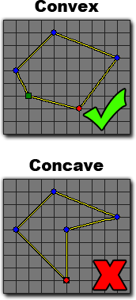

Tutorial
Page 2 of 7
Fixtures
The first thing we should do is design our player ship and give it a fixture. As you may know, normally in GameMaker:Studio an object will have a
collision mask that is defined by either it's sprite properties, or it's mask_index. However, this is not enough when dealing with physics, as we also need to
assign physical properties to the object, which is why we assign it a fixture.
Fixtures are like collision masks in that they define the area of an object (or instance) that is going to be the "shape" that the physics uses for all collisions, but it also
contains the physical information of that object too. So, the normal process for creating a fixture is to give it a shape, then define it's physical properties and finally apply that
fixture to our object or instance. We can even create one fixture and apply it to multiple instances so that they can all have the same base physical properties! This may seem
complicated at first, but GameMaker:Studio has a set of tools built into the GUI to help you create and apply simple fixtures easily.
You should design (or load) a sprite for your player ship now, keeping it's lines simple as there is a very specific limit to the shape a single fixture can have. They must always be
convex and never concave as the physics system will not accept a concave fixture. The following graphic illustrates this :

Click on the Next button to go to the next page of the tutorial.